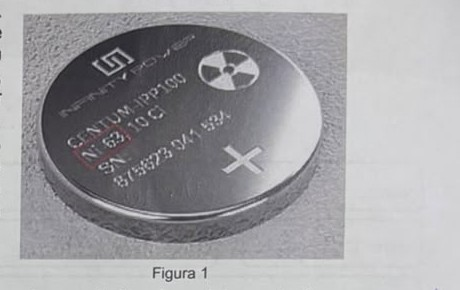
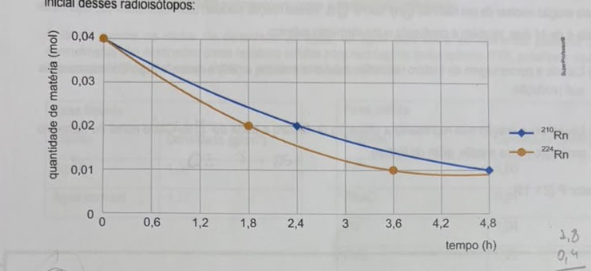
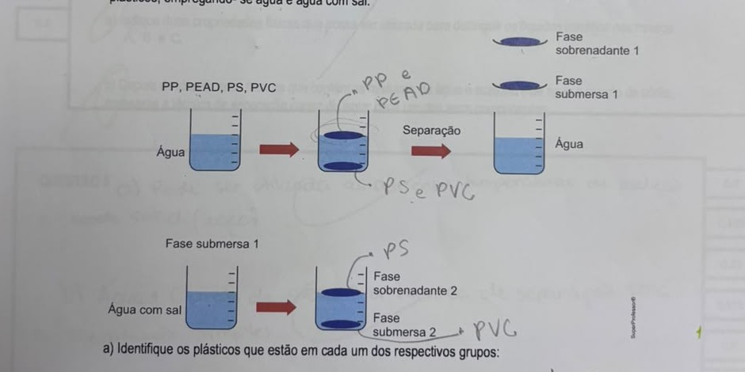
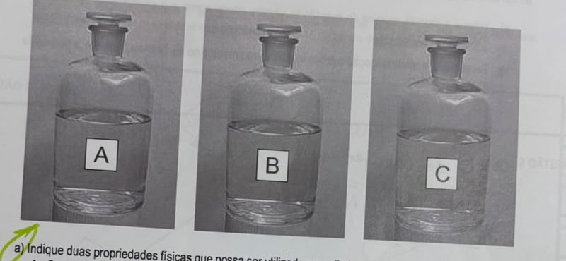
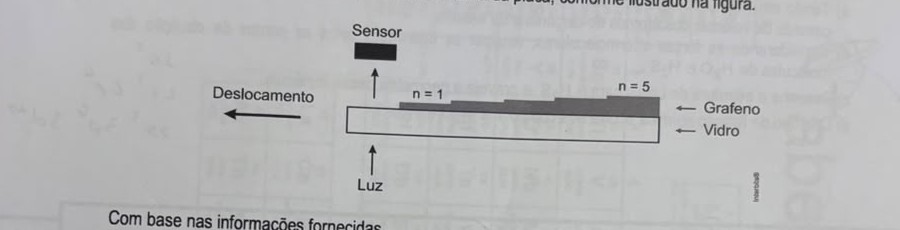

Professores: Paulo e Eduardo · AC1 · Simulado Vital
A geração de eletricidade limpa, barata e constante é algo essencial para o desenvolvimento sustentável. Dispositivos eletrônicos portáteis funcionam, em geral, com baterias químicas, que precisam ser constantemente recarregadas e têm vida útil limitada. Uma alternativa promissora para a substituição de baterias químicas em dispositivos portáteis vem surgindo com o desenvolvimento de baterias nucleares, como a mostrada na Figura 1, constituídas por emissor de radiação beta (β), como o ⁶³Ni, e um semicondutor.
A energia da radiação beta excita os elétrons do semicondutor, criando lacunas onde antes havia elétrons. Esses pares de lacunas-elétrons geram uma diferença de potencial que pode ser aproveitada na forma de eletricidade.

a) Desenhe, nos gráficos apresentados no quadro de respostas, a evolução ao longo do tempo do número de átomos de ⁶³Ni e de ⁶³Cu presentes em uma bateria nuclear de ⁶³Ni, sabendo que o ⁶³Cu é um isótopo estável.
b) Assuma que essa bateria é operacional até que 75% da quantidade de ⁶³Ni sejam consumidos. Qual a vida útil da bateria em anos, sabendo que o tempo de meia-vida do ⁶³Ni é de 100 anos? A massa da bateria aumenta, diminui ou se mantém ao longo do seu tempo de uso?
a) O ⁶³Ni decai (emissão beta) virando ⁶³Cu — como o número de massa não muda na emissão beta, todo átomo de Ni que decai vira um átomo de Cu. Então: a curva do ⁶³Ni começa no valor máximo e decai exponencialmente até perto de zero; a curva do ⁶³Cu começa em zero e cresce, sempre "espelhada" com a de Ni (a soma das duas quantidades é sempre igual à quantidade inicial de ⁶³Ni).
b) "75% consumidos" significa que sobram 25% do ⁶³Ni original. Cada meia-vida reduz a quantidade pela metade: 100% → 50% (1 meia-vida) → 25% (2 meias-vidas). Então são necessárias 2 meias-vidas: 2 × 100 = 200 anos.
A massa da bateria se mantém praticamente constante: o decaimento beta transforma um nêutron em próton (emitindo um elétron), então o número de massa não muda (⁶³Ni → ⁶³Cu, ambos com A=63) — a massa da partícula beta emitida é desprezível perto da massa do átomo.
O radônio é um gás nobre cujos radioisótopos ²¹⁰Rn e ²²⁴Rn sofrem decaimento por emissão das partículas alfa e beta, respectivamente. Observe no gráfico o decaimento de igual quantidade de matéria inicial desses radioisótopos:

a) Determine a razão entre os tempos de meia-vida do ²¹⁰Rn e do ²²⁴Rn.
b) Em seguida, identifique o isótopo do elemento formado no decaimento do ²¹⁰Rn.
c) Quantas partículas alfas e betas o ²²⁴Rn emite até sofrer transmutação e se tornar o ²⁰⁸Pb
Dados: Utilizar números atômicos dos elementos da tabela periódica.
a) A meia-vida é o tempo até a quantidade cair pela metade (de 0,04 para 0,02 mol) — não a razão entre as próprias quantidades. Pelo gráfico: o ²¹⁰Rn (azul) chega a 0,02 mol em t≈2,4h; o ²²⁴Rn (laranja) chega a 0,02 mol em t≈1,8h. Razão = 2,4/1,8 = 4/3 ≈ 1,33.
b) ²¹⁰Rn (Z=86) emite uma partícula alfa (²He, A=4, Z=2): A final = 210-4=206; Z final = 86-2=84 (elemento com Z=84 é o Polônio). Isótopo formado: ²⁰⁶Po.
c) De ²²⁴Rn (Z=86,A=224) até ²⁰⁸Pb (Z=82,A=208): ΔA=224-208=16, e cada alfa reduz A em 4, então são 4 partículas alfa (16÷4). Isso reduziria Z em 4×2=8, chegando a Z=86-8=78 — mas o chumbo tem Z=82, 4 unidades a mais. Cada beta aumenta Z em 1 (sem mudar A), então são necessárias 4 partículas beta pra completar. Resposta: 4 alfas e 4 betas.
O elemento fósforo apresenta um único isótopo natural, com 16 nêutrons em seu núcleo. No entanto, podem ser produzidos isótopos radioativos para utilização em medicina nuclear, como o fósforo-32, obtido pela reação nuclear de um nêutron (¹₀n) com o ³²₁₆S. Nessa reação nuclear, além do fósforo-32, cuja meia-vida é de 14 dias, também é produzido outro elemento químico.
a) Calcule a porcentagem de fósforo radioativo existente em uma amostra desse isótopo 6 semanas após sua produção.
b) Equacione a reação que representa a obtenção do fósforo a partir do ³²₁₆S. Cite o nome do elemento produzido nessa reação, além do fósforo.
Dado: P (Z = 15).
a) 6 semanas = 42 dias. Número de meias-vidas = 42 ÷ 14 = 3 meias-vidas. Fração restante = (1/2)³ = 1/8 = 12,5%. (Atenção: o cálculo não é "42 ÷ 2" — é o tempo total dividido pelo valor da meia-vida, 14 dias, não por 2.)
b) Balanceando massa e carga: ³²₁₆S (A=32,Z=16) + ¹₀n (A=1,Z=0) → ³²₁₅P (A=32,Z=15) + X. Pra fechar a conta, X precisa ter A=(32+1)-32=1 e Z=(16+0)-15=1 — ou seja, X é um próton (¹₁H). Reação: ³²₁₆S + ¹₀n → ³²₁₅P + ¹₁H. O elemento produzido, além do fósforo, é o hidrogênio (na forma de um próton).
Uma das formas de fazer a reciclagem de misturas de plásticos envolve o uso de água e água com sal. Quando uma mistura de fragmentos plásticos é adicionada a um desses líquidos, os mais densos submergem e os menos densos permanecem como sobrenadantes (flutuam).
A tabela mostra os dados de densidade da água, da água com sal e de diferentes plásticos que normalmente são destinados como resíduos sólidos para reciclagem: polipropileno (PP), polietileno de alta densidade (PEAD), poliestireno (PS) e policloreto de vinila (PVC).
| Fase líquida | Densidade (g/cm³) |
|---|---|
| Água | 1,00 |
| Água com sal | 1,17 |
| Fase sólida | Densidade (g/cm³) |
|---|---|
| PP | 0,90 |
| PEAD | 0,94 |
| PS | 1,04 |
| PVC | 1,22 |
No infográfico, são representadas as etapas envolvidas no processo de separação dos fragmentos desses plásticos, empregando-se água e água com sal.

a) Identifique os plásticos que estão em cada um dos respectivos grupos: Fase Sobrenadante 1, Fase Submersa 1, Fase Sobrenadante 2, Fase Submersa 2.
b) Calcule o valor da densidade de uma mistura de 40% de água e 60% de água com sal. Justifique sua resposta apresentando os cálculos.
a) Comparando com a densidade da água (1,00): PP (0,90) e PEAD (0,94) são menos densos → flutuam → Fase Sobrenadante 1 = PP e PEAD. PS (1,04) e PVC (1,22) são mais densos → afundam → Fase Submersa 1 = PS e PVC. Agora comparando PS e PVC com a água salgada (1,17): PS (1,04) é menos denso que 1,17 → flutua → Fase Sobrenadante 2 = PS. PVC (1,22) é mais denso que 1,17 → afunda → Fase Submersa 2 = PVC.
b) Densidade da mistura = média ponderada pelas proporções: d = 0,40×1,00 + 0,60×1,17 = 0,40 + 0,702 = 1,102 g/cm³.
Em um laboratório, encontram-se os frascos A, B e C. Sabe-se que eles contêm álcool industrial 100%, uma mistura de acetona com água 50% (v/v), e uma solução aquosa de cloreto de sódio (sal de cozinha) na concentração de 10% (m/v), porém, os rótulos não permitem a identificação do conteúdo de cada frasco.

a) Indique duas propriedades físicas que possa ser utilizada para distinguir os líquidos contidos nos frascos A, B e C.
b) Depois de identificar os frascos que contém as misturas: de água e acetona e de água e cloreto de sódio, apresente a técnica de separação capaz de isolar cada um dos seus componentes.
a) Duas propriedades físicas que servem: ponto de ebulição e densidade (ponto de fusão/solidificação também vale) — cada líquido/mistura tem valores característicos diferentes.
b) Água + cloreto de sódio (sólido dissolvido em líquido): a técnica é a destilação simples (o sal não é volátil, fica no balão enquanto a água evapora e condensa). Água + acetona (dois líquidos miscíveis, com pontos de ebulição diferentes): a técnica é a destilação fracionada.
O nitrogênio pode ser absorvido por alguns vegetais da família das leguminosas por meio do íon amônio NH₄⁺. Para que essa absorção ocorra, inicialmente, um grupo de bactérias presente nas raízes desses vegetais converte o nitrogênio molecular N₂ do ar em amônia NH₃. A amônia em meio aquoso é convertida no íon amônio, utilizado por esses vegetais.
a) Indique a fórmula química da substância simples citada acima e o caráter polar ou apolar da ligação entre N e H.
b) Em seguida, nomeie a ligação química interatômica presente no N₂. Nomeie, também, a geometria molecular do NH₃.
a) A substância simples é o N₂ (gás nitrogênio). A ligação entre N e H é polar (covalente polar) — N e H têm eletronegatividades diferentes, então o par de elétrons da ligação não fica igualmente dividido (não é apolar, já que só ligações entre átomos idênticos são apolares).
b) A ligação no N₂ é uma ligação covalente tripla (N≡N, três pares de elétrons compartilhados). A geometria molecular do NH₃ é piramidal (trigonal piramidal) — o par de elétrons não-ligante no nitrogênio "empurra" os três hidrogênios pra fora do plano.
Em algumas indústrias, a fumaça produzida pelo processo de queima de combustíveis fósseis contém a mistura dos seguintes gases residuais: CO₂, CO, SO₂, N₂ e O₂.
a) Nomeie o CO₂, indique a geometria molecular do SO₂.
b) Em seguida, escreva o símbolo do elemento químico que compõe um dos gases residuais, sabendo que esse elemento pertence ao grupo 15 da tabela de classificação periódica.
a) CO₂ se chama dióxido de carbono (ou gás carbônico) — e sua geometria (linear) não é o que a pergunta pede aqui, é o nome mesmo. A geometria molecular do SO₂ é angular (o enxofre central tem um par de elétrons não-ligante, que distorce a geometria, igual à água).
b) O grupo 15 é a família do nitrogênio. Entre os gases residuais listados (CO₂, CO, SO₂, N₂, O₂), o único elemento desse grupo é o próprio nitrogênio (N), presente no N₂.
O gás nitrogênio, presente no ar, precisa ser transformado em íons nitrato e amônio nas raízes das plantas, para ser incorporado nas biomoléculas que possuem o elemento químico nitrogênio em sua composição, como as proteínas e o DNA. Johanna Döbereiner, uma pesquisadora brasileira de origem alemã, descobriu que bactérias eram responsáveis por essa conversão química e, por ter contribuído muito para o aumento da produção agrícola, foi indicada ao Prêmio Nobel da Paz em 1997.
a) Escreva as fórmulas estruturais do gás nitrogênio (N₂) e dos íons nitrato (NO₃⁻) e amônio (NH₃).
b) Qual o tipo de ligação química presente em cada composto químico formado?
a) N₂: :N≡N: (tripla ligação, um par isolado em cada N). NH₃:
um N central ligado a 3 H, com um par isolado no N (estrutura piramidal, como na Q06). NO₃⁻: N
central ligado a 3 O — na estrutura de Lewis mais simples, uma ligação dupla N=O e duas ligações
simples N-O (cada O simples carregando uma carga negativa formal), mas na prática as três ligações
são equivalentes por ressonância.
b) Todos os três são compostos com ligação covalente — mesmo o NO₃⁻ sendo um íon (com carga -1), as ligações internas N-O são covalentes.
O grafeno (forma alotrópica do carbono) é considerado um material de elevada transparência devido à baixa absorção de luz (2%) por monocamada formada. Em um experimento, várias camadas de grafeno foram depositadas sobre uma placa de vidro conforme apresentado na figura a seguir. Em uma das extremidades, um feixe de luz foi incidido na placa. A parte não absorvida pelo material foi transmitida e detectada com uso de um sensor posicionado acima da placa, conforme ilustrado na figura.

Com base nas informações fornecidas,
a) Esboce um gráfico que represente a porcentagem de luz transmitida em função da quantidade de camadas de grafeno quando a placa de vidro é deslocada conforme indicado na figura. Desconsidere qualquer interferência do vidro;
b) Cite outras três formas alotrópicas do carbono.
a) Cada camada absorve 2% da luz que chega nela, ou seja, transmite 98%. Isso se aplica multiplicativamente a cada camada nova (não é uma soma) — depois de n camadas, %transmitida = (0,98)ⁿ × 100%. É uma curva decrescente (mais camadas = menos luz passa), começando em 100% (0 camadas) e caindo suavemente — não uma reta crescente. Alguns valores: n=1→98%; n=2≈96%; n=5≈90,4%.
b) Três formas alotrópicas do carbono, além do grafeno: diamante, grafite e fulereno (ou nanotubos de carbono, ou carbono amorfo). "Gás carbônico" (CO₂) não vale como resposta aqui — é um composto (carbono + oxigênio), não uma forma do elemento carbono puro.
Sabe-se que compostos constituídos por elementos do mesmo grupo na tabela periódica possuem algumas propriedades químicas semelhantes. Entretanto, enquanto a água é líquida em condições normais de temperatura e pressão (CNTP), o sulfeto de hidrogênio, também chamado de gás sulfídrico, como o próprio nome revela, é gasoso nas CNTP.
a) Tendo em vista a posição dos elementos na tabela periódica, escrever a configuração eletrônica da camada de valência dos átomos de oxigênio e de enxofre.
b) Considerando as forças intermoleculares, explicar as diferenças entre os pontos de ebulição das moléculas de H₂O e H₂S.
c) Desenhe a estrutura de Lewis para o H₂S e preveja a geometria dessa molécula.
d) Que tipo de ligação química ocorre nos compostos H₂O e H₂S?
a) Oxigênio (Z=8): camada de valência 2s² 2p⁴. Enxofre (Z=16): camada de valência 3s² 3p⁴.
b) A água forma pontes (ligações) de hidrogênio entre suas moléculas — a força intermolecular mais forte que existe, possível porque o H está ligado diretamente a um átomo bem eletronegativo (O) e pequeno. O H₂S só faz forças dipolo-dipolo (mais fracas), porque o enxofre é menos eletronegativo e maior que o oxigênio. Por isso a água precisa de bem mais energia (temperatura mais alta) pra ferver, mesmo sendo uma molécula menor.
c) H-S-H com dois pares de elétrons não-ligantes no enxofre. Geometria: angular (mesma lógica da água — 2 pares isolados "empurram" os hidrogênios).
d) Em ambos, H₂O e H₂S, a ligação é covalente (polar, já que O e S são mais eletronegativos que H).